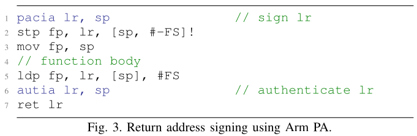

Hardware-based Always-On Heap Memory Safety
Yonghae Kim
1
, Jaekyu Lee
2
, Hyesoon Kim
1
Georgia Institute of Technology
1
Arm Research
2
Heap Memory Safety
"Illicit use of pointers" - cause of memory safety bugs
Heap exploits tries to use Double frees, Use after frees, etc
Need to do Pointer Bounds check
Storing metadata for each pointer
Checking bounds on every pointer dereference
Challenges in Pointer Bounds checking
Extra instructions overhead
Check instructions
instructions for metadata propagation
Complex metadata addressing
Intel MPX uses 2 level hierarchical table
Metadata access involves (approx)
3 register to register moves
3 shift operation
2 memory loads
ARM Pointer Authentication (PA)
ISA extension
Generates PAC (PA code) using the pointer and context
Signs it with a hardware key
Stores PAC in higher unused bits of a pointer
Used to check pointer integrity using extra instructions
ARM Pointer Authentication (PA) example

AOS: Always On Heap memory safety
Pointer signing
Uses ARM PA to do selective bounds checking
Sign and store metadata for malloc allocated pointers
Bounds checking
If the pointer is signed, do a bounds check
No need for check instructions
Introduce memory check unit to do the check
Metadata management
Uses a per-process Hash Bounds table with PAC as the key
AOS
Stores 8 B metadata for each pointer
Hash table access is faster than hierarchical table
Detects Use after frees and double frees
Frees will remove metadata but not sign
Subsequent frees will cause exceptions
Subsequent dereferences will cause exceptions
Evaluations
Using SPEC2006 benchmarks
Modified Gem5 simulator
Watchdog incurs 19.4 % overheads
AOS incurs 8.4 % performance overheads